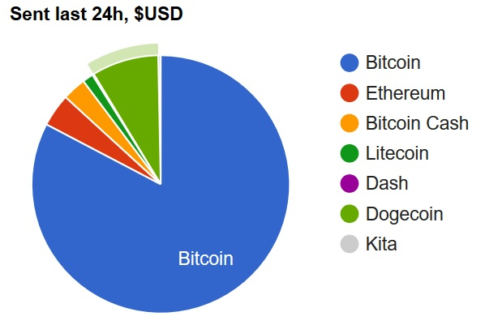
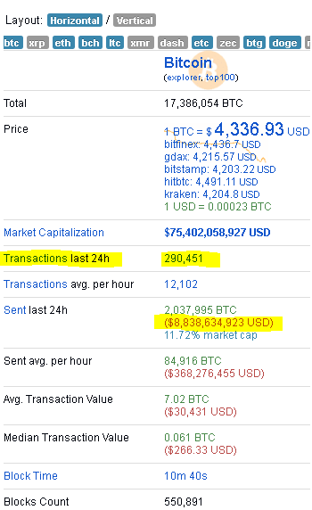
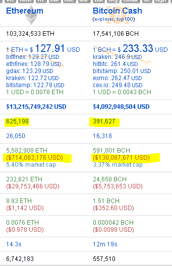
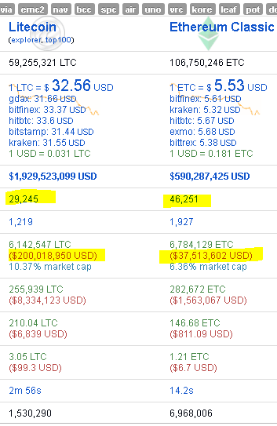
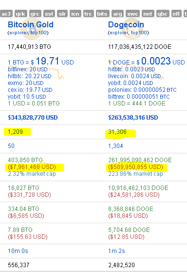

Какое количество $USD было переведено с использованием первой десятки криптовалют за последнии 24 часа
Эта статья поможет понять какой объем денежных средств в $USD, проходит через блокчейны (транзакции внутри блокчейна), криптовалют в день.
Исследование на 29 октября 2018 года
.
Чтобы лучше понять, сколько $USD передается в транзакциях криптовалют, мы подготовили исследование, которое включает в себя не только объем $USD, отправленных за последние 24 часа, но и список ТОП-5 криптовалют.
В соответствии с данными bitinfocharts в течение 24 часов 29 октября 2018 года, ТОП-5 криптовалют отправили через свои блокчейны - 8 188 743 531 (~ 8,2 млрд. Долл. США),вот их список:
1.BITCOIN (BTC) – $6 817 411 499 (82.8%);
2.DOGECOIN (DOGE) – $691 401 974 (8.4%);
3.ETHEREUM (ETH) – $330 643 916 (4%);
4.BITCOIN CASH (BCH) – $239 215 107 (2.9%)
5.LITECOIN (LTC) – $110 071 035 (1.3%).
.
Что DOGE делает здесь?
Как вы видите, совершенно неожиданный гость на втором месте с 691 401 974 $USD отправленных в течение 24 часов. WOOF.
Заключение
За последние 24 часа между кошельками было проведено около 8,2 млрд. долларов США. Довольно хорошие цифры, несмотря на падение рынка, вам не кажется?
Похоже, что криптовалютные рынки больше не являются песочницами. Эти миллиарды долларов США являются суммой только пяти верхних криптовалют из более чем 2000. Финансовый порядок может действительно измениться в ближайшем будущем, поскольку нынешняя денежная система неэффективна для мира, в котором мы живем сегодня.
Замечание
Пользователь shibe5 заметил, что имеет место переоценка. Точное количество DOGE, сменивших владельца, неизвестно. Действительно мы не можем узнать переводятся ли, DOGE другому лицу либо самому себе. И требуется дополнительное исследование, чтобы выяснить, учитывается ли при подсчете сдача. Например: Если мы тратим TX на котором у нас 1000000 DOGE при этом хотим перевести 1000 DOGE другому лицу, т.к. ТХ должен быть потрачен полностью 999000, как сдачу мы отправляем самому себе. Сумма транзакции будет 1000000 DOGE, при том, что сменили владельца лишь 1000 DOGE. Возможно при определении активности в том или ином блокчейне имеет смысл учитывать количество транзакций в сутки. Здесь, хотя DOGE и не на втором месте после битка, но уж в первой десятке точно.




Защитите вашу конфиденциальность при использовании криптовалют.
Защитите Ваши интернет платежи с помощью Linux Live CD(USB).
Создание Lubuntu Linux Live CD в Windows.
Создание Lubuntu Linux Live USB в Windows.
Проверка целостности дистрибутива Lubuntu Linux Live USB(CD/DVD) в Windows.
Проверка целостности дистрибутива Lubuntu Linux Live USB(CD/DVD) после записи на USB(CD/DVD).
|
|

Home Nagrania Projects |


|